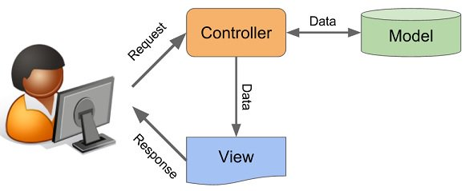

Laravel Básico

Frameworks
- separação da aplicação em componentes:
- simplicidade
- nichos especializado
- "terceirização" das escolhas
- seleção de componentes
- configurações pré-estabelecidas
- implementar uma ideia de forma rápida
MVC

Model usado neste curso
Implementaremos as camadas MVC para manipular os dados desse schema:

Preparação da infra

Requisitos mínimos
- php7+
- mysql-server
- composer
- git
Good luck for you!
Dica

Instale o Virtualbox em seu SO:
https://www.virtualbox.org/wiki/Downloads
Importar .ova com tudo que é necessário para os treinamentos:
https://uspdev.github.io/treinamentos
Dica

PPA do ondrej:
sudo add-apt-repository -y ppa:ondrej/php
sudo apt-get update
Libs mínimas para rodar o Laravel:
php7.2 php7.2-xml php7.2-intl php7.2-mbstring php7.2-mysql
Composer
Instalação do composer globalmente:
curl -s https://getcomposer.org/installer | php
sudo mv composer.phar /usr/local/bin/composer
Git

sudo apt-get install -y git
Configurações globais:
git config --global user.name "joazinho"
git config --global user.email "joaozinho@usp.br"
Mysql

sudo apt -y install mysql-server
Criando usuário e banco:
sudo mysql
CREATE DATABASE disciplinas;
GRANT ALL PRIVILEGES ON disciplinas.* to disciplinas@'localhost' identified by 'disciplinas';
quit
Conhecendo o laravel

Instalação
Criação do projeto com composer:
composer create-project laravel/laravel meu_projeto
Inserir informações do banco de dados:
vim .env
Se estiver tudo correto:
php artisan serve
MVC: Rotas
- Encaminhamento da requisição
- Closure e Controller
- api e web
Exemplo:
Route::get('/', function() {
return 'gritar!';
});
Route::get('/{n}', function($n) {
$as = str_repeat('a',$n);
return "grit{$a}r!";
});
Controller
Criação da classe básica do controller:
php artisan make:controller IndexController
Encaminhar requisição na rota para controller:
Route::get('/','IndexController@gritar');
Route::get('/{n}','IndexController@gritarMultiplo');
Agora, mover código da closure para os controller.
view
No método do controller, retornar uma view:
return view('gritar');
Criar o arquivo resources/views/gritar.blade.php:
<h1>Gritar</h1>
Projeto disciplinas

- Fazer fork do projeto disciplinas_seunome
- Fazer um clone do seu fork para a VM
- Criar uma branch para issue que irá trabalhar
- Adicionar e commitar mudanças na branch
- Fazer push da branch para origin
- Criar Pull Request
Atualizando master local
Adicionar remote upstream
git remote add upstream URLAtualizar remotes
git remote updateFazer merge do master do upstream com master local
git checkout master git merge upstream/master
Issues cadastradas no github
- issue 1: Criação de Resource para Disciplinas, com model, controller e migrations
- issue 2: Implementação do método index (criar exemplos com o tinker)
- issue 3: Implementar método show, ou seja, criação de página que mostra a disciplina e sua ementa
- issue 4: Criação de formulário para cadastro de disciplina. Persistir
- issue 5: Criação de formulário para edição de disciplina. Persistir
- issue 6: Implementar opção de delete de disciplina. Mostrar botão no index
- issue 7: Criar model e migrations para Turmas
- issue 8: Implementar relacionamento entre os Model de Turma e Disciplina
- issue 9: Criação de formulário para cadastro de turma no contexto da disciplina. Persistir
- issue 10: Listar as turmas cadastradas nas páginas das disciplinas
- issue 11: Implementar autenticação de usuário local. Restringir acesso de cadastro de turma e disciplina para usuários logados.
- issue 12: Implementar busca por nome da disciplina
Issues opcionais
- issue 13: Criar o template master usando um exemplo do bootstrap4. Fazer todos outros templetes herdarem o estilo do template master
- issue 14: Implementar calendário do tipo datepicker (jquery ou bootstrap) nos campos de data início e fim do cadastro de turma
Ambiente do curso

Issue 1
Criação de Resource para Disciplinas, com model, controller e migrations (criar exemplos com o tinker)
Gerar model para Disciplina:
php artisan make:model Disciplina -crm
Edita migrations e inserir campos para titulo e ementa:
$table->string('titulo');
$table->text('ementa');
Rodar migrations:
php artisan migrate
Cadastrar disciplinas usando tinker:
php artisan tinker
Cadastre:
- Filosofia I:
- Filosofia Grega e Romana
Issue 2
Implementação do método index
Rota resource e rota adicional para raiz do sistema:
Route::get('/','DisciplinaController@index');
Route::resource('disciplinas','DisciplinaController')
Implementar método index do controller disciplina:
return Disciplina::all();
Agora usando view:
return view('disciplinas.index',['disciplinas' => $disciplinas]);
Template para listar disciplinas:
# resources/views/disciplinas/index.blade.php
<ul>
@foreach ($disciplinas as $disciplina)
<li>{{ $disciplina->titulo }} </li>
@endforeach
</ul>
Qual você prefere?
1: ['disciplinas' => $disciplinas]
2: compact('disciplinas')
Issue 3
Implementar método show, ou seja, criação de página que mostra a disciplina e sua ementa
Implementar o método show para disciplina:
return view('disciplinas.show',compact('disciplina'));
Template para show:
<h1>{{ $disciplina->titulo }}</h1>
<p>{{ $disciplina->ementa }}</p>
Link em index.blade.php
<a href="/disciplinas/{{ $disciplina->id }}">
Issue 4
Criação de formulário para cadastro de disciplina. Persistir
Criar um formumário html para cadastro de disciplina:
<form method="POST" action="/disciplinas">
{{ csrf_field() }}
Nome: <input name="titulo">
Ementa: <textarea name="ementa"> </textarea>
<button type="submit"> Salvar </button>
</form>
No método create retornar o formulário:
return view('disciplinas.create');
Checar rota para submissão (já criada):
php artisan route:list
No método store, salvar no banco de dados:
$disciplina = new Disciplina;
$disciplina->titulo = $request->titulo;
$disciplina->ementa = $request->ementa;
$disciplina->save();
return redirect('/');
Agora podemos colocar um botão no index.blade.php para cadastrar nova disciplina. Do it!
Issue 5
Criação de formulário para edição de disciplina. Persistir
Formulário para editar disciplina:
<form method="POST" action="/disciplinas/{{ $disciplina->id }}">
{{ csrf_field() }}
{{ method_field('patch') }}
Nome: <input name="titulo" value="{{ $disciplina->titulo }}">
Ementa: <textarea name="ementa"> {{ $disciplina->ementa }} </textarea>
<button type="submit"> Salvar </button>
</form>
Renderizar formulário no método edit:
return view('disciplinas.edit',compact('disciplina'));
Persistir mudança no método update:
$disciplina->titulo = $request->titulo;
$disciplina->ementa = $request->ementa;
$disciplina->save();
return redirect("/disciplinas/$disciplina->id");
Em index.blade.php inserir link de edição de disciplina:
<a href="/disciplinas/{{ $disciplina->id }}/edit"> Editar </a>
Issue 6
Implementar opção de delete de disciplina. Mostrar botão no index
Fazer um formumlário de delete em index.blade.php:
<form method="POST" action="/disciplina/{{ $disciplina->id }}">
{{ csrf_field() }}
{{ method_field('delete') }}
<button type="submit">Apagar</button>
</form>
Implementar o método destroy:
$disciplina->delete();
return redirect('/');
Issue 7
Criar model e migrations para Turmas
Criar o model para cadastro de turma:
php artisan make:model Turma -m
Inserir os campos na migration:
$table->string('ministrante');
$table->date('inicio');
$table->date('fim');
$table->text('bibliografia')->nullable();
$table->integer('disciplina_id')->unsigned();
$table->foreign('disciplina_id')->references('id')->on('disciplinas');
Rodar migrations:
php artisan migrate
Issue 8
Implementar relacionamento entre os Model de Turma e Disciplina. Testar novos métodos no Tinker
No model Turma:
public function disciplina()
{
return $this->belongsTo('App\Disciplina');
}
No model de Disciplina:
public function turmas()
{
return $this->hasMany('App\Turma');
}
tinker:
$d = new Disciplina;
$d->ementa = 'Filosofia Grega e Romana'
$d->titulo = "Filosofia I"
$d->save()
$t = new Turma;
$t->ministrante = 'Pedro'
$t->inicio = '2015-10-10'
$t->fim = '2016-10-10'
$t->disciplina_id = $d->id
$t->save()
$d->turmas
$d->turmas[0]->ministrante
$t->disciplina
$t->disciplina->ementa
Issue 9
Criação de formulário para cadastro de turma no contexto da disciplina. Persistir
No controler de disciplina, método para inserção de turma:
public function createTurma($disciplina_id)
{
return view('disciplinas.turmas.create',compact('disciplina_id'));
}
Rota para inserir turma:
Route::get('/disciplinas/{disciplina_id}/turmas/create','DisciplinaController@createTurma');
Botão para inserir turma no show de disciplina:
<a href="/disciplinas/{{ $disciplina->id }}/turmas/create">Inserir Turma</a>
Formulário para cadastro de turma:
<form method="POST" action="/disciplinas/{{ $disciplina_id }}/turmas">
{{ csrf_field() }}
Ministrante: <input name="ministrante">
Data início: <input name="inicio">
Data fim: <input name="fim">
Bibliografia: <textarea name="bibliografia"></textarea>
<button type="submit" class="btn btn-success"> Salvar </button>
</form>
Criar uma rota para store de turma:
Route::post('/disciplinas/{disciplina_id}/turmas','DisciplinaController@storeTurma');
Criar o método store turma:
public function storeTurma(Request $request, $disciplina_id)
{
$turma = new \App\Turma;
$turma->ministrante = $request->ministrante;
$turma->inicio = $request->inicio;
$turma->fim = $request->fim;
$turma->bibliografia = $request->bibliografia;
$turma->disciplina_id = $request->disciplina_id;
Disciplina::find($disciplina_id)->turmas()->save($turma);
return redirect("/disciplinas/$disciplina_id");
}
Issue 10
Listar as turmas cadastradas nas páginas das disciplinas
Mostrar as turmas, no show da disciplina:
@foreach ($disciplina->turmas as $turma)
{{ $turma->ministrante }}
{{ $turma->inicio }}
@endforeach
Issue 11
Implementar autenticação de usuário local. Restringir acesso de cadastro de turma e disciplina para usuários logados.
Autenticação:
php artisan make:auth
Deixar os métodos index e show públicos e os demais privados.
public function __construct()
{
$this->middleware('auth')->except(['index','show']);
}
Inserir botão de login no master.blade.php
@auth
<form id="logout-form" action="/logout" method="POST">
{{ csrf_field() }}
<button type="submit">Sair </button>
</form>
@else
<a href="/login">Login</a>
<a href="/register">Register</a>
@endauth
Nas views geradas na pasta resources/views/auth extender layout padrão:
@extends('layouts.master')
Issue 12
Implementar busca por nome da disciplina
Buscar:
public function search(Request $request)
{
$text = $request->text;
$disciplinas = Disciplina::where('titulo', 'LIKE', "%{$text}%")->get();
return view('disciplinas.index',compact('disciplinas'));
}
Rota:
Route::post('/disciplinas/search','DisciplinaController@search');
Campo de busca no template master:
<form method="POST" action="/disciplinas/search">
{{ csrf_field() }}
<input name="text" type="text">
<button type="submit"> Buscar </button>
</form>
Issue 13
Criar o template master usando um exemplo do bootstrap4. Fazer todos outros templetes herdarem o estilo do template master
Vamos usar o exemplo do bootstrap:
sticky-footer-navbar
Adaptar o layout para nosso projeto:
- Copiar o index para layouts/master.blade.php
- Copiar o css do tema para public/css/app.css (BAD PRACTICE)
- Colocar link de app.css no master.blade.php
- Limpar conteúdo e criar uma seção content:
@yield ('content')
Mude tudo para CDN (BAD PRACTICE)
<link rel="stylesheet" href="https://maxcdn.bootstrapcdn.com/bootstrap/4.0.0/css/bootstrap.min.css">
<link rel="stylesheet" href="https://maxcdn.bootstrapcdn.com/font-awesome/4.7.0/css/font-awesome.min.css">
<script src="https://code.jquery.com/jquery-3.2.1.slim.min.js"></script>
<script src="https://maxcdn.bootstrapcdn.com/bootstrap/4.0.0/js/bootstrap.min.js"></script>
Datepicker:
<link rel="stylesheet" href="https://cdnjs.cloudflare.com/ajax/libs/bootstrap-datepicker/1.7.1/css/bootstrap-datepicker.min.css">
<script src="https://cdnjs.cloudflare.com/ajax/libs/bootstrap-datepicker/1.7.1/js/bootstrap-datepicker.min.js"></script>
<script src="https://cdnjs.cloudflare.com/ajax/libs/bootstrap-datepicker/1.7.1/locales/bootstrap-datepicker.pt-BR.min.js"></script>
Nas views de index, edit, show e create estender master e usar a seção:
@extends ('master')
@section ('content')
seu conteúdo
@endsection
Now we have power!
Use as classes do bootstrap para deixar mais bunitinho (tabelas, buttons e forms)
Issue 14
Implementar calendário do tipo datepicker (jquery ou bootstrap) nos campos de data início e fim do cadastro de turma
Que tal formatar as datas no blade?
Carbon\Carbon::parse($turma->inicio)->format('d/m/Y')
Que tal usar um calendário no cadastrato da turma?
$('.datepicker').datepicker({
format: 'dd/mm/yyyy',
language: 'pt-BR'
});
No controller:
use Carbon\Carbon;
Carbon::createFromFormat('d/m/Y', $request->inicio)
Que tal ordernar pela da de início?
@foreach ($disciplina->turmas->sortByDesc('inicio') as $turma)